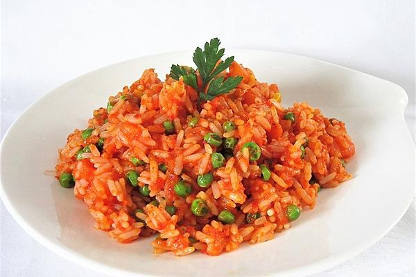

Djuvec Reis

Djuvec oder Duvec oder Dschuwetsch ist ein traditionelles südosteuropäisches Schmorgericht
aus Gemüse und Fleisch, teilweise auch Reis oder Reisnudeln
Es gilt in mehreren Staaten dieser Region als Nationalgericht. Eigentlich bedeutet der Name Pfannengericht zu serbisch đuveče, mazedonisch đuveč Bratpfanne.
Zutaten
- Ajvar
- Reis
- Zwiebel
- Butter
- Tomaten, stückig
- Hühnerbrühe
- Paprikapulver, edelsüß
- Erbsen
- Paprika
- Petersilie
Zubereitung
- Zwiebel klein schneiden, Knoblauchzehe auspressen und beides in Butter andünsten
- Reis, Tomatenstücke, Brühe, Ajvar und Wasser hinzufügen und kräftig abschmecken
- Erbsen und gewürfelte Paprika hinzugeben
- 20 min köcheln lassen und vor dem Servieren Petersilie dazu geben
Zurück zur Startseite